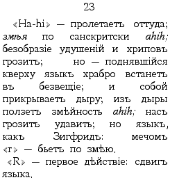
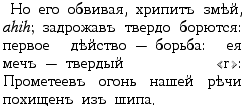

Glossolalia (Section 23)

"Ha-hi" -- flies forth from there; serpent in Sanskrit is ahi; the formlessness of suffocations and wheezings threatens; but -- the tongue rising upwards stands bravely up into the objectlessness; and covers the hole with itself; from the hole crawls the serpentry ahi; it threatens to strangle us; but the tongue, is like Siegfried: with the sword of "r" -- it strikes the serpent.
"R" is -- the first action: a movement of the tongue.

But as the serpent encircles it, the serpent wheezes, ahi; shuddering they battle fiercely: the first action is -- a brawl: its sword is -- the hard "r": Prometheus' fire of our speech is kidnapped from a hiss.